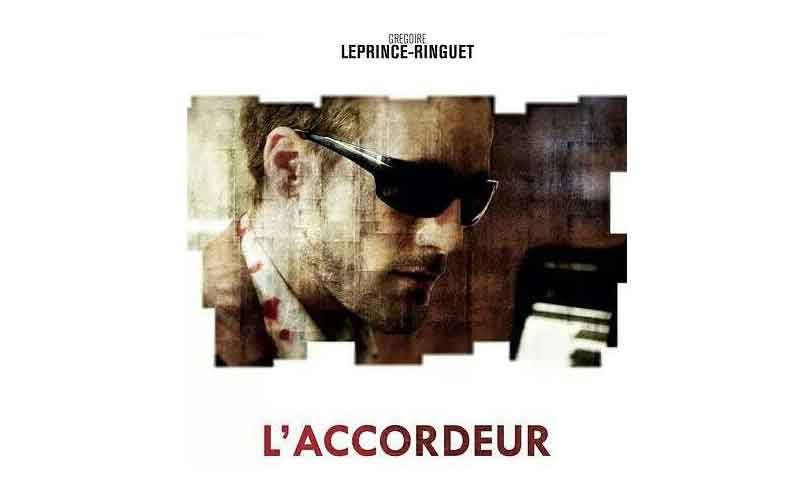

作者：admin这个是管理员精选的视频，希望大家喜欢多图测试二多图片试试《少数人的晚餐》《少数人的晚餐》更多视频作者：haha123456唐唐搞笑集唐唐搞笑集唐唐搞笑集唐唐搞笑集唐唐搞笑集唐唐搞笑集唐唐搞笑集唐唐搞笑集唐唐搞笑集唐唐搞笑集测试tag更多视频作者：haha123456adadacasavsvAAC大菜市场更多视频作者：haha123456大大安时处顺更多视频作者：haha123456大大安时处顺aaaa更多视频